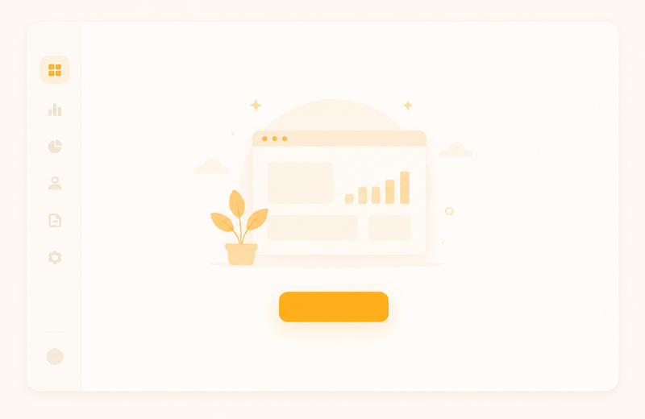
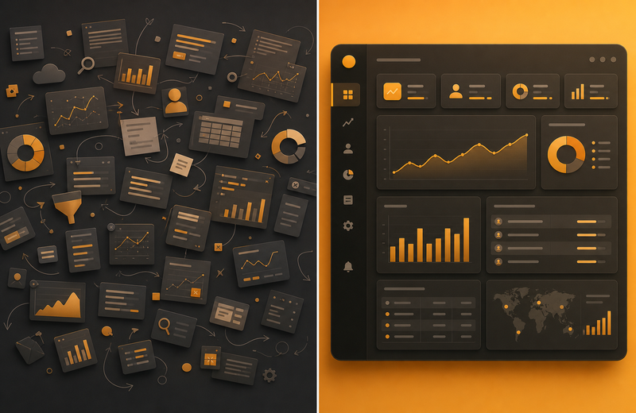
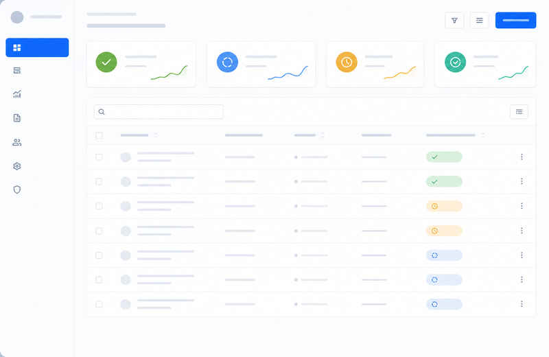

Interface principale
Design épuré, hiérarchie visuelle et CTA visibles.

Suggestions, vote roadmap et correcteur d'intention — zéro impasse utilisateur.

Les équipes produit perdent du temps sur des outils fragmentés et des tableaux Excel obsolètes.
QueryBase centralise l'essentiel dans une interface claire, pensée pour le Grand Est et au-delà.
Design épuré, hiérarchie visuelle et CTA visibles.

Parcours utilisateur optimisé en trois clics.

API REST, webhooks et connecteurs métier.


Tableaux de bord temps réel et exports.

Équipes synchronisées et commentaires.

RGPD, SSO et chiffrement bout en bout.


14 jours d'essai gratuit, sans carte bancaire.
Démarrer l'essai